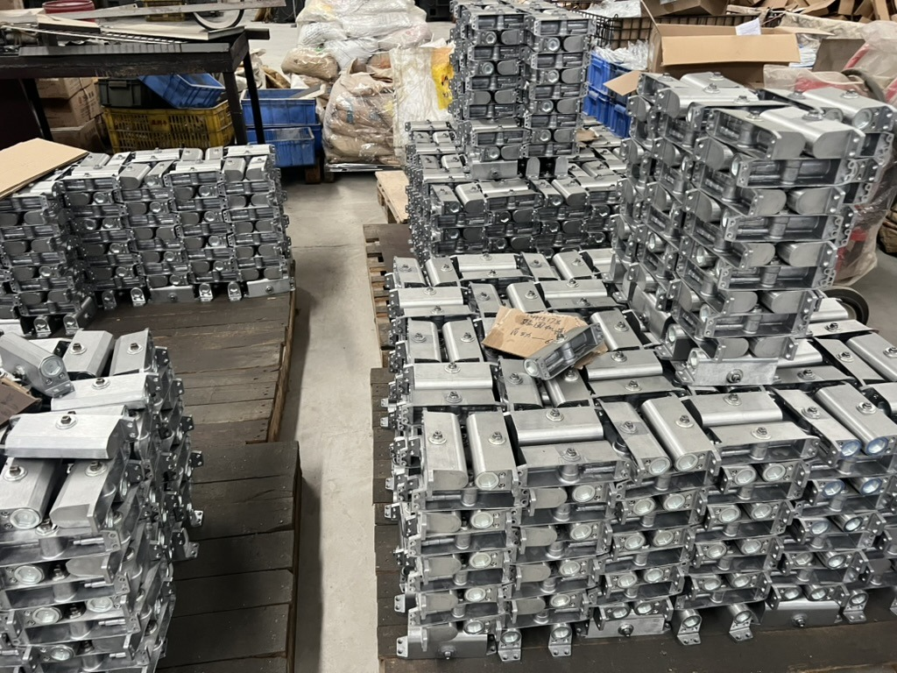

Door-hardware components on wooden platforms during a Taotao business visit. This is packing-context photography, not an export shipment or evidence of ISPM 15 compliance.
Hypothetical buyer situation: A U.S. importer has approved a door-closer order. The supplier's packing line says “export wooden pallet included,” and loading is about to be booked. Before releasing the shipment, the buyer needs to establish what wood packaging will actually travel with the goods.
Why the packing decision matters
USDA APHIS guidance, updated July 27, 2026, says regulated wood packaging entering or transiting the United States must meet treatment, marking and pest-related requirements. Noncompliant wood packaging can prevent entry. Pallets are only part of the check: crates, skids and loose supporting wood can also matter.
The procurement gap is practical. A supplier may show a compliant pallet before packing, then add different timber to support a heavy load. A statement about the pallet does not identify every piece used in the finished packing arrangement. This is a hypothetical risk to check, not an allegation about the business pictured.
Evidence to request before loading
Use this Taotao packing-evidence sheet alongside the product inspection report. Product acceptance and packaging acceptance should have separate sign-offs.
| Packing element | Request | Buyer check |
|---|---|---|
| Pallet or skid | Material description and photographs of the actual allocated units, including readable marks where required | Do the photos show the units for this shipment rather than a showroom example? |
| Crate and internal supports | List of panel, batten and blocking materials | Has the packer assessed all wood components, including solid timber added to an otherwise processed-wood pack? |
| Loose dunnage added during loading | Loading-stage photographs and the packer's sourcing record | Has the final arrangement introduced wood that was absent from the first packing plan? |
| Responsibility | Named packer and a written hold point before dispatch | Who replaces questionable packaging and confirms the recheck? |
How to verify the evidence
Compare the purchase-order packing specification, actual packing photographs and shipment allocation. Ask the packer to identify each material rather than calling everything “wood.” Confirm the applicable requirements with the importer or broker when the construction or an exemption is unclear.
APHIS advises checking the official mark and signs of pests, using appropriate packaging providers and putting compliance into the contract. Its guidance identifies the country code, facility identifier and treatment code as parts of the mark. Keep photographs legible enough to read, and record which packing units they represent. A mark photograph does not guarantee entry or replace the authorities' inspection.
Red flags and limits
Pause when the only evidence is a generic pallet photograph, a mark cannot be read, or the loading plan introduces undocumented timber. Suspected pests, inconsistent marks or uncertainty about treatment call for specialist review. Do not interpret a neat warehouse or a clean-looking pallet as compliance evidence. This checklist also does not determine load capacity, moisture protection or product damage resistance; those need their own agreed checks.
Continue / Pause / Escalate
- Continue: the actual packing materials and units are identified, applicable requirements have been checked, and the agreed pre-loading review is complete.
- Pause: packing photographs, material descriptions or responsibility for replacement are missing.
- Escalate: suspected pests, questionable marks or uncertain material treatment to the importer, qualified packaging provider and relevant authority before dispatch.
Related product context: door closers and hardware sourcing. One next step: send Taotao Trading a redacted hardware packing plan for a document-gap review. Remove customer details and confidential prices.